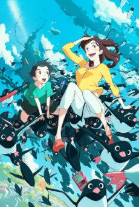
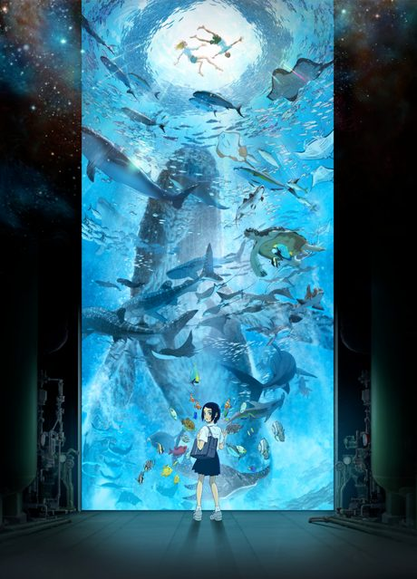

Penguin Highway
ペンギン・ハイウェイ
Aoyama, a fourth grader who thinks like a scientist, investigates why penguins have appeared in his town.
An original anime, so there's no book to continue with.
7.4AniList score
—Animeter, no votes yet
1film
Rate it or report where you stopped
Is there a manga to continue?
StatusOriginal
An anime original, so there is no manga to pick up from.
Sources: AniList, MyAnimeList
More like Penguin Highway
 Film8.4
Film8.4
 Done8.6
Done8.6
 Original8.4
Original8.4

Film7.2 Original7.3
Original7.3
 Film8.3
Film8.3
 Manga Ch. 318.1
Manga Ch. 318.1
 Manga Vol. 138.1
Manga Vol. 138.1
 Unclear8.2
Unclear8.2
 Original8.0
Original8.0
 Unclear8.0
Unclear8.0
 Film7.7
Film7.7